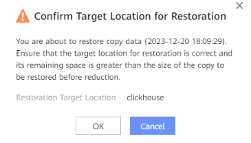
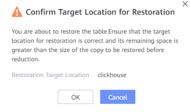

This section describes how to restore a ClickHouse database or table set that has been backed up to the original or a new location.
Prerequisites
- For restoration of ClickHouse databases or table sets using copies to a new cluster, the target cluster must be homogeneous.
- When restoring data to the original or new location, ensure that the remaining space of the target location is greater than the size of the restoration copy before reduction. Otherwise, the restoration fails.
Procedure
- Choose Explore > Copy Data > Big Data > ClickHouse.
- Search for copies by ClickHouse resource or copy. This section describes how to search for copies by resource.
On the Resources tab page, locate the database or table set to be restored by resource name and click the name.
- Select the year, month, and day in sequence to find the copy.
If
 is displayed below a month or day, a copy is generated in that month or day.
is displayed below a month or day, a copy is generated in that month or day. - Restore data using a specific copy.
- Common restoration
- In the row where the copy to be restored resides, choose .
- Restore the ClickHouse database or table set to its original or a new location.Table 1 describes related parameters.
Table 1 Restoring a ClickHouse database or table set Parameter
Description
Restore To
Select either Original location or New location.
Location
If you select Original location for the Restore To parameter, the original location is displayed.
Target Cluster
Target cluster for restoration, which is mandatory if you select New location for the Restore To parameter.
- Click OK.
- In the displayed dialog box, confirm the information and click OK.

- Table-level restoration
- In the row where the copy to be restored resides, choose .
- Select the table to be restored.
- Select the target cluster for restoration. Table 1 describes related parameters.
- Click OK.
- In the displayed dialog box, confirm the information and click OK.

- Common restoration